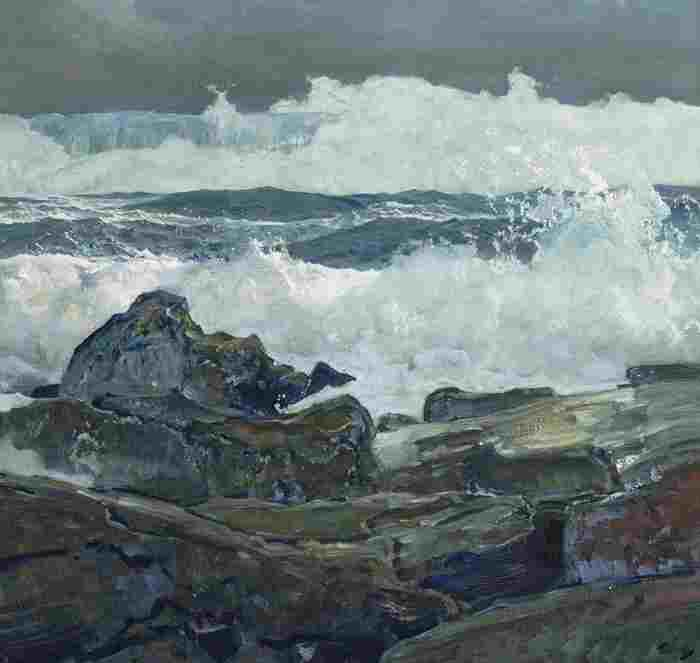
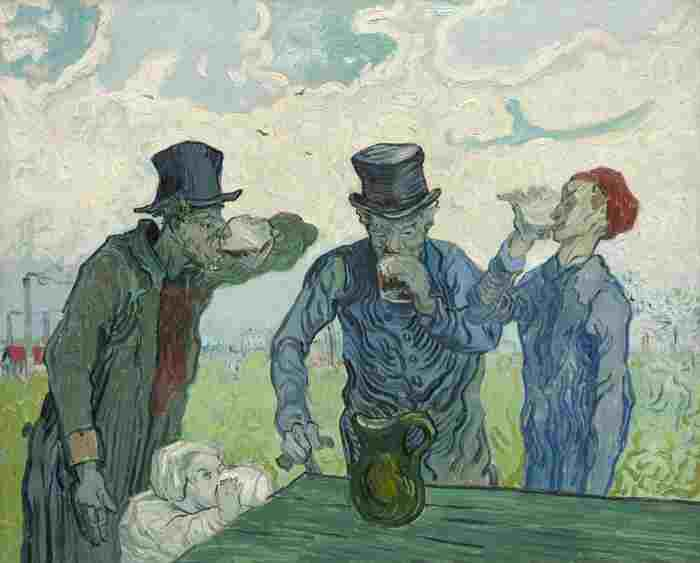
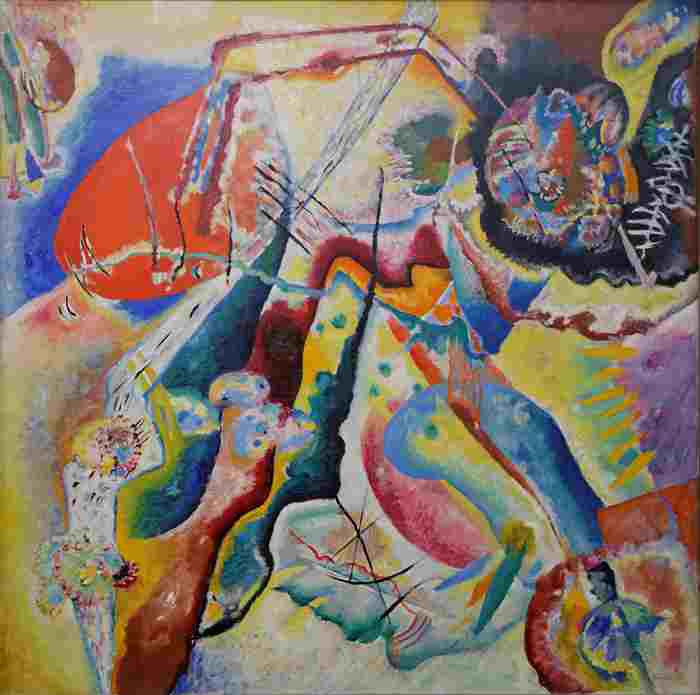
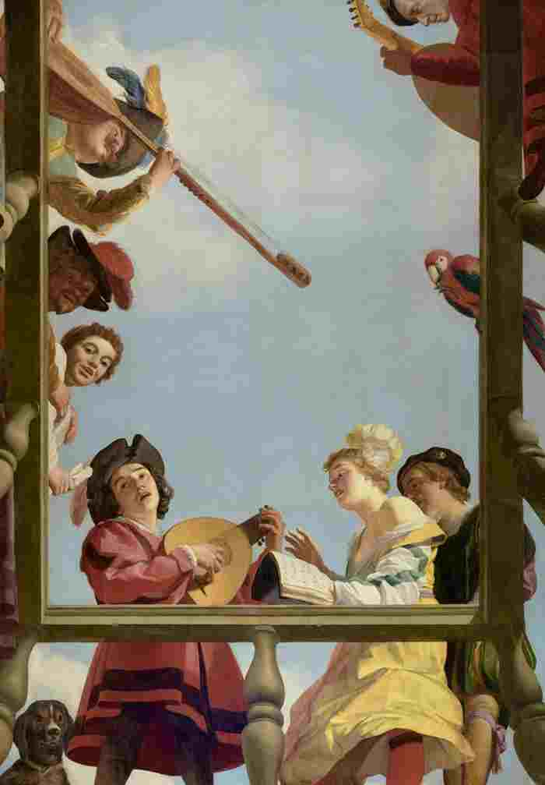
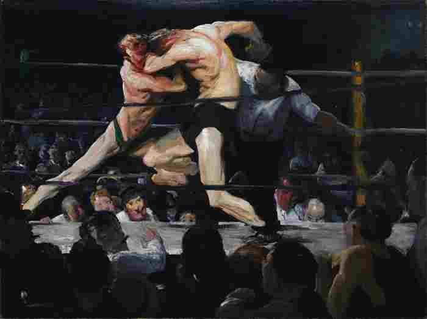

{kind=link}
{kind=link}
September 23, 2020
{kind=link}
The Next Wave, 1924
Frederick Judd Waugh (
1861-1940)
92.1 x 96.8 cm (36 1/4 x 38 1/8 in.)
Indianapolis Museum of Art
{kind=link}
September 16, 2020
{kind=link}
The Drinkers, 1890
Vincent Van Gogh (
1853-1890)
59.4 × 73.4 cm (23 3/8 × 28 7/8 in.)
The Art Institute of
Chicago
{kind=link}
September 9, 2020
{kind=link}
Painting with a Red Stain, 1914
Wassily Kandinsky (
1866–1944)
130 x 130 cm (51 3/16 x 51 3/16 in.)
National Museum of
Modern Art
{kind=link}
September 2, 2020
{kind=link}
Aristotle with a Bust of Homer, 1653
Rembrandt van Rijn (
1606–1669)
143.5 x 136.5 cm (55 1/2 x 53 3/4 in.)
The Metropolitan
Museum of Art
{kind=link}
August 26, 2020
{kind=link}
Musical Group on a Balcony, 1622
Gerrit van
Honthorst (
1590 - 1656)
309.9 × 216.4 cm (122 × 85 3/16 in.)
J. Paul Getty Museum
{kind=link}
August 19, 2020
{kind=link}
Stag at Sharkey's, 1909
George Bellows (
1882-1925)
92 x 122.6 cm (36 1/4 x 48 1/4 in.)
The Cleveland Museum of
Art
{kind=link}
August 12, 2020

{kind=link}
{kind=link}
{kind=link}
{kind=link}
{kind=link}
{kind=link}
{kind=link}
{kind=link}
{kind=link}
{kind=link}
{kind=link}
{kind=link}